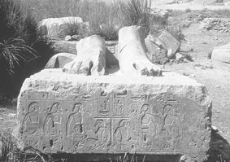
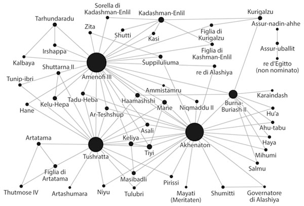

Atto II
Una questione (egea) da ricordare: gli avvenimenti del XIV secolo
Alte più di sessanta piedi e destinate a essere le custodi del luogo per i successivi tremilaquattrocento anni – anche se il tempio funebre che si ergeva dietro di loro è stato saccheggiato dei suoi magnifici blocchi di pietra e a poco a poco si è trasformato in polvere –, le due immense statue all’ingresso del tempio funerario di Amenofi III a Kom el-Hetan erano, e sono ancora, chiamati i colossi di Memnon, in seguito a un’identificazione errata con Memnon, mitico principe etiope ucciso a Troia da Achille. Ogni statua rappresenta Amenofi III seduto, il faraone che governò l’Egitto tra il 1391 e il 1353 a.C. In parte a causa di questa identificazione erronea, i colossi erano già famosi duemila anni fa, visitati dai turisti greci e dai romani dell’antichità, che conoscevano l’Iliade e l’Odissea di Omero e che incisero graffiti sulle loro zampe. Si credeva che uno dei colossi, dopo essere stato danneggiato da un terremoto nel I secolo a.C., all’alba, quando la pietra si contraeva e poi si dilatava nell’alternarsi del freddo della notte e del calore del giorno, rilasciasse un fischio misterioso. Purtroppo per la rete turistica dell’antichità, il lavoro di restauro fatto durante il periodo romano nel II secolo d.C. mise fine al quotidiano «lamento del dio».1
Tuttavia, per quanto affascinanti, non sono i due colossi ad essere emblematici per la nostra storia, ma piuttosto la quinta di cinque statue che si ergono nella fila nord-sud, nell’area dove un tempo c’era il tempio funebre. Il tempio si trovava sulla riva occidentale del Nilo, vicino a quella che oggi è nota come la Valle dei Re, all’altezza della moderna città di Luxor. Ognuna della cinque basi sosteneva una statua del re, più grande di natura, anche se non erano alti come i colossi situati all’ingresso del tempio. Il cortile in cui si trovavano conteneva in tutto almeno quaranta statue con relative basi.
La Lista egea di Amenofi III
Ognuna delle cinque basi, come pure molte altre, contiene iscrizioni con una serie di toponimi scolpiti sulla pietra in quello che gli Egizi chiamavano un «ovale fortificato», un ovale allungato, scolpito, verticale, con una serie di piccole sporgenze lungo tutto il perimetro. Esso intendeva rappresentare una città fortificata, munita di torri difensive (da qui la presenza delle sporgenze). Ogni ovale fortificato era situato (o piuttosto riposizionato) sulla parte anteriore di un prigioniero incatenato, raffigurato con le armi sul dorso e legato ai polsi, a volte con una corda intorno al collo che lo legava agli altri prigionieri. Si trattava del metodo egiziano, tradizionale del Nuovo Regno, per rappresentare le città e i paesi stranieri; anche se gli Egizi non controllavano in realtà questi luoghi stranieri, né erano sul punto di conquistarli, scrivevano i nomi su questi «ovali fortificati» per una convenzione artistica e politica, forse come simbolo di dominazione simbolica.
Nel loro insieme, i nomi incisi su questi piedestalli formavano una serie di liste geografiche che designavano il mondo conosciuto agli Egizi dell’epoca di Amenofi III, all’inizio del XIV secolo a.C. Erano nominati su queste liste alcuni dei luoghi e delle popolazioni più importanti del Medio Oriente di allora, compresi gli Ittiti a nord, i Nubiani a sud e gli Assiri e i Babilonesi a est. Nell’insieme, le liste sono uniche nella storia dell’Egitto.
Ma ciò che ci colpisce è che la lista scolpita dallo scalpello sul piedestallo della quinta statua contiene nomi mai citati prima nelle iscrizioni egizie. Ci sono nomi di città e di località situate a ovest dell’Egitto, nomi strani come Micene, Nauplia, Cnosso, Cidonia e Citera, scritti sul frontone sinistro e sul lato sinistro del piedestallo, e due altri nomi, scritti separatamente sul lato frontale destro del piedestallo, come se si trattasse di un titolo situato a capo della lista: Keftiu e Tanaja.


Figura 6
I colossi e la Lista egea di Amenofi III (foto di E.H. Cline e J. Strange).
Qual è il loro significato e che cosa rappresentano questi nomi? Negli ultimi quarant’anni gli archeologi e gli egittologi hanno discusso sul significato dei quindici nomi trovati sul piedestallo, che oggi viene comunemente chiamato «Lista egea».
Sono stati gli archeologi tedeschi e i loro collaboratori a trovare negli anni sessanta il piedestallo della statua: poi negli anni settanta una parte venne accidentalmente distrutta. Secondo una diceria, non verificata, i membri di una tribù locale di beduini avevano fatto un fuoco sotto il piedestallo e vi avevano versato acqua fredda nel tentativo di staccare i pannelli incisi, per poterli vendere sul mercato antiquario. La versione ufficiale è che furono gli incendi boschivi della zona a provocare i danni. Chiunque sia stato il colpevole, l’intera base fu frantumata in mille pezzi. Fino a poco tempo fa, gli archeologi avevano a disposizione soltanto poche fotografie a colori del basamento originale, il che era un gran peccato, perché i nomi sulla lista erano così particolari che tredici dei quindici non erano mai stati visti prima in Egitto... e non si sarebbero visti mai più.
Quello che i turisti moderni vedono ora (di solito quando passano vicino alle rovine in un autobus con l’aria condizionata mentre stanno andando nella vicina Valle dei Re) sono le basi delle statue e le statue stesse, che sono state riassemblate e sono di nuovo sotto i cieli imbevuti di sole per la prima volta dopo più di tremila anni. Nel 1998, un’équipe internazionale guidata dall’egittologa Houring Sourouzian e da suo marito Rainer Stadelmann, l’ex direttore dell’Istituto Archeologico tedesco del Cairo, ha riaperto gli scavi a Kom el-Hetan. Gli scavi sono continuati fino a quando i due archeologi hanno trovato i frammenti del basamento della statua con la Lista egea distrutta, oltre a quelli delle statue vicine. Stanno ora per essere ricostruiti e restaurati. Gli ottocento frammenti della Lista egea da soli hanno richiesto più di cinque anni per essere ricomposti.2
Solo due dei nomi della Lista egea erano già noti agli scribi egizi e ai moderni egittologi, i due che erano utilizzati come titoli in cima alla lista: Keftiu, che era la parola egizia per l’isola di Creta, e Tanaja, che probabilmente era la parola egizia per il continente greco. Questi due nomi hanno cominciato a fare la loro apparizione nei testi egizi durante l’epoca di Hatshepsut e Thutmose III, quasi un secolo prima, ma mai in compagnia di toponimi specifici di singole città e regioni nell’Egeo.
Gli altri nomi sulla lista di questo basamento sono così inusuali, e tuttavia riconoscibili quasi immediatamente, che il primo egittologo che li ha pubblicati in inglese, l’eminente professor Kenneth Kitchen, dell’Università di Liverpool, all’inizio non sapeva se suggerirne la traduzione, temendo di apparire ridicolo di fronte ai colleghi. Nella sua prima breve annotazione sull’iscrizione del basamento della statua, che nel 1965 era solo un articolo di poche pagine sulla rivista accademica «Orientalia», Kitchen dichiara con prudenza: «Sono esitante a mettere per iscritto questa idea; i lettori possono ignorarlo se lo desiderano. I due nomi Amnisa e Kanusa assomigliano in modo molto fastidioso ad Amniso(s) e ... Cnosso, celebre sito antico sulla costa settentrionale di Creta».3
Da allora, un certo numero di studiosi ha lavorato per decifrare i nomi che erano sulla lista e il loro significato nascosto. Lo studioso tedesco Elmar Edel ha pubblicato nel 1966 la prima analisi esaustiva delle liste di tutti e cinque i basamenti; una seconda edizione, aggiornata e rivista, è stata pubblicata alcuni anni dopo – quaranta in realtà –, nel 2005. In questo intervallo, nnumerosi altri studiosi hanno consacrato molti pensieri e molto inchiostro alle possibili interpretazioni della lista.4
Primo della lista, dopo i titoli di Keftiu (Creta) e Tanaja (la terraferma greca), venivano alcuni nomi di importanti siti minoici di Creta, compreso Cnosso e il suo porto di Amnisos, seguiti da Festo e Cidonia, elencati in un ordine che andava da est a ovest. Tutti possedevano un palazzo minoico oppure, nel caso di Amnisos, fungevano da porto per un vicino palazzo minoico. Successivamente, nella lista ci sono le isole di Citera, situata a metà strada tra Creta e il continente greco, e poi importanti insediamenti e siti micenei e regioni sulla terraferma greca, come Micene e il suo porto di Nauplia, la regione di Messenia e forse la città di Tebe in Beozia. Ultimi nella lista sono alcuni nomi della Creta minoica, questa volta in ordine inverso, da ovest a est, che comprendono di nuovo Amnisos.
La lista somiglia stranamente a un itinerario di viaggio dall’Egitto all’Egeo e ritorno. Secondo l’ordine dei nomi, i viaggiatori dall’Egitto andavano prima a Creta, forse per visitare i membri della famiglia reale e i mercanti minoici con cui, da questo momento, l’Egitto fu in contatto per quasi un secolo. Poi continuavano, via Citera, verso la terraferma greca per visitare i Micenei, la nuova potenza sulla scena che stava conquistando le rotte commerciali dei Minoici dirette all’Egitto e al Medio Oriente. Infine ritornavano in Egitto via Creta con la rotta più veloce e diretta, approvvigionandosi di acqua e cibo ad Amnisos, ultimo scalo nel viaggio verso la patria, così come prima tappa, all’andata, dopo la partenza.
Le liste delle basi delle statue sembrano un catalogo completo del mondo conosciuto all’epoca degli Egizi di Amenofi III. La maggior parte dei nomi era già nota da altri documenti e trattati; tra i nomi familiari c’erano gli Ittiti e i Cassiti/Babilonesi (di cui parleremo in seguito), come pure le città di Canaan. I nomi di luogo nell’Egeo, tuttavia, erano (e sono ancora) eccezionali, ed erano anche incisi in un ordine peculiare. Alcuni erano addirittura riscolpiti in modo peculiare, dato che i primi tre nomi erano stati cancellati a un certo punto, prima che la lista fosse resa pubblica.5
Alcuni studiosi pensano che questa lista non sia nient’altro che propaganda, la vana vanteria di un faraone che aveva sentito parlare di luoghi lontani e desiderava conquistarli o intendeva convincere il suo popolo che l’avrebbe fatto. Altri credono invece che la lista non sia affatto un’auto-esaltazione, ma si baserebbe su una conoscenza oggettiva e su contatti reali avvenuti in quei tempi lontani. Quest’ultima spiegazione sembra la più verosimile, anche perché, da numerose altre rappresentazioni nelle tombe dei nobili che risalgono all’epoca di Hatshepsut e Thutmose III nel XV secolo a.C., sappiamo che c’erano numerosi contatti con gli Egei: missioni diplomatiche e viaggi di mercanti che venivano in Egitto a portare i loro tributi. È probabile che i contatti siano continuati nel secolo successivo, durante il regno di Amenofi III. In tal caso, potrebbe trattarsi della prima registrazione scritta di un viaggio andata e ritorno dall’Egitto all’Egeo, un viaggio compiuto più di trentaquattro secoli fa, alcuni decenni prima che il re fanciullo Tut regnasse sulla terra eterna.
L’idea che si tratti del documento di un viaggio dall’Egitto all’Egeo dell’inizio del XIV secolo, invece che la registrazione di una spedizione di Micenei e Minoici in Egitto, sembra plausibile per le seguenti, avvincenti ragioni. In sei siti disseminati intorno all’area egea (a Creta, nella terraferma greca e a Rodi), gli archeologi hanno trovato alcuni oggetti che recano incisi i cartigli (le insegne reali) di Amenofi o di sua moglie, la regina Tiyi. C’è una correlazione tra le zone di ritrovamento di questi oggetti e i siti nominati nella Lista egea: ben quattro di questi sei siti fanno parte della lista.
Alcuni di questi oggetti sono semplici scarabei sacri e piccoli sigilli, ma c’è anche un vaso; tutti hanno il cartiglio del faraone o di sua moglie. Ancora più importanti sono i numerosi frammenti di piastre di maiolica, un materiale che è una via di mezzo tra la creta e il vetro, trovati a Micene, probabilmente la città più importante della Grecia del XIV secolo a.C. Questi frammenti – almeno dodici – provengono da un totale di nove piastre, ognuna delle quali misura venti centimetri di lunghezza, dieci di larghezza e due di profondità. Tutte le piastre avevano il titolo regale di Amenofi III inciso con pittura nera, leggibile sui due lati: «Il buon dio, Neb-Ma’at-Re, Amenofi, principe di Tebe, ha dato vita».6
Gli egittologi le chiamano piastre di deposito di fondazione. Almeno in Egitto, le si ritrova situate in particolari depositi sotto i templi oppure, talvolta, sotto le statue del re.7 Questi depositi funzionavano un po’ come le capsule del tempo nella nostra cultura. Il loro scopo era probabilmente quello di assicurarsi che gli dèi e le generazioni future conoscessero l’identità e la generosità del donatore/costruttore e la data dell’edificazione del palazzo, della statua o di qualsiasi edificio.
Ciò che rende uniche queste piastre a Micene è semplicemente il fatto che sono uniche nell’Egeo. In realtà, sono esclusive di Micene, impossibili da trovare nell’intero universo del Mediterraneo antico, dal momento che questi oggetti di maiolica, con il nome impresso di Amenofi, non sono mai stati rinvenuti fuori dall’Egitto. I primi frammenti a Micene furono trovati e pubblicati dagli archeologi greci alla fine dell’Ottocento e all’inizio del Novecento. Si pensò che fossero fatte di porcellana, e il nome di Amenofi non era ancora stato riconosciuto né decifrato. Nel corso degli anni si fecero altre scoperte, alcune delle quali compiute dall’eminente archeologo inglese Lord William Taylor, nei luoghi di culto di Micene. Il frammento più recente fu rinvenuto solo pochi anni fa, abbandonato e sepolto in profondità in una fonte di Micene, dall’archeologa Kim Shelton, dell’Università di California a Berkeley.
Nessuno dei frammenti è stato trovato nel suo contesto originale. In altre parole, non abbiamo idea di come fossero utilizzati originariamente in quel sito. Ma il semplice fatto che si trovino a Micene e da nessun’altra parte indica che probabilmente esiste una stretta relazione tra questo sito e l’Egitto dell’epoca di Amenofi III. Considerando il fatto che questa regione era ai margini del grande territorio civilizzato con cui l’Egitto era in contatto, la correlazione di questi oggetti con i nomi della Lista egea suggerisce che durante il regno di Amenofi III era probabilmente avvenuto qualcosa di inusuale nei rapporti internazionali.

Figura 7
Piastra di maiolica di Amenofi III rinvenuta a Micene (fotografia di E.H. Cline).
Gli oggetti importati dall’Egitto e dal Medio Oriente trovati nell’Egeo formano un modello interessante, forse collegato alla Lista egea. Sembra che la Creta minoica abbia continuato a essere la destinazione principale delle rotte commerciali dall’Egitto e dal Medio Oriente almeno nella prima parte del XIV secolo a.C. Tuttavia, poiché si trovano oggetti dall’Egitto, da Canaan e da Cipro in quantità approssimativamente simili a quelli di Creta, è possibile che le merci dall’Egitto non fossero più il carico principale dei mercanti che navigavano tra Creta e il Mediterraneo orientale, come era stato durante i secoli precedenti. Se le rotte dell’Egeo nei primi periodi erano governate da inviati diplomatici e da commercianti egizi e minoici, ormai questi venivano raggiunti e addirittura sostituiti da altri, provenienti da Canaan e da Cipro.
Questa complessa situazione internazionale continuò nel corso dei successivi due secoli, ma si assiste a una trasformazione del tipo di merci straniere già alla fine del XIV secolo. Mentre si verificò un’improvvisa diminuzione nella quantità di oggetti importati a Creta, ci fu un incremento dell’importazione sulla terraferma greca. Se questo netto cambiamento nell’importanza dei commerci è reale, sembra possibile (anche se decisamente ipotetico) che la diminuzione e la definitiva cessazione di oggetti orientali diretti a Creta potessero essere collegate alla distruzione di Cnosso, che avvenne nel 1350 a.C. circa, e alla successiva presa di possesso da parte di Micene delle rotte commerciali verso l’Egitto e il Medio Oriente.8
La Lista egea di Amenofi III forse registra una situazione di questo tipo, visto che i luoghi elencati sul basamento della statua comprendono sia siti minoici a Creta sia siti micenei sulla terraferma greca. Se un’ambasceria egizia era stata inviata nell’Egeo durante il regno di Amenofi III, forse era perché aveva una duplice missione: rafforzare i rapporti con un partner commerciale antico e consolidato (i Minoici) e stabilire relazioni con una potenza emergente (i Micenei).9
Gli archivi di Amarna
Il motivo per cui non siamo sorpresi dell’esistenza della Lista egea o delle altre liste nel tempio, che insieme riassumono il mondo come era conosciuto agli Egizi nel XIV secolo a.C., è che sappiamo da altre testimonianze che Amenofi III riconosceva l’importanza dei rapporti con le potenze straniere, in particolare con i re delle terre che avevano un’importanza diplomatica e commerciale per l’Egitto. Egli stipulò trattati con molti di questi sovrani e sposò numerose delle loro figlie per cementarli. Lo sappiamo dalla sua corrispondenza, giunta fino a noi sotto la forma di un archivio, iscritto su tavolette d’argilla e scoperto nel 1887.
La storia comunemente accettata sulla scoperta di questo archivio è che venne trovato da una contadina in cerca di combustibile nella località moderna di Tell el-Amarna, dove si trovano le rovine della città un tempo chiamata Akhetaten (che significa «Orizzonte del disco del sole»).10 Il figlio eretico di Amenofi III, Amenofi IV, più conosciuto con il nome di Akhenaton, l’aveva costruita nella metà del XIV secolo a.C. come nuova capitale.
Akhenaton era il successore di Amenofi III, e probabilmente aveva avuto il ruolo di co-governante con suo padre per alcuni anni prima della morte di questi, nel 1353 a.C. Subito dopo aver assunto il potere, Akhenaton mise in atto quella che viene chiamata la «rivoluzione di Amarna». Fece chiudere i templi dedicati a Ra, Amon e agli altri dèi principali, si impossessò dei loro immensi tesori e creò per se stesso un potere senza pari, come capo assoluto del governo, dell’esercito e della religione. Condannò il culto di tutte le divinità egizie, tranne Aton, il disco del sole, che lui, e lui solo, poteva adorare direttamente.
Questa politica è talvolta considerata il primo tentativo di monoteismo, poiché verosimilmente era adorato un solo dio. In realtà la questione è discutibile (ed è stata oggetto di numerose discussioni accademiche). Per gli Egizi comuni c’erano essenzialmente due dèi: Aton e Akhenaton, ma al popolo era permesso pregare soltanto il secondo; il re pregava invece Aton per conto del popolo stesso. È possibile, in effetti, che Akhenaton fosse un eretico e magari perfino un fanatico, sotto alcuni aspetti, ma, piuttosto che un esaltato, era certamente anche un calcolatore e un tiranno. La sua rivoluzione religiosa potrebbe infatti essere stata una manovra politica e diplomatica accorta, destinata a restaurare il potere del re, che durante i regni dei faraoni precedenti era stato eroso a favore dei sacerdoti.
Ma Akhenaton non distrusse tutto quello che i suoi antenati avevano creato. In particolare, capì l’importanza di mantenere rapporti internazionali, soprattutto con i re delle terre che circondavano l’Egitto. Akhenaton proseguì la tradizione, inaugurata dal padre, fatta di negoziazioni diplomatiche e di cooperazione commerciale con le potenze straniere di tutti i livelli, compreso Šuppiluliuma e gli Ittiti.11 Il faraone conservò un archivio di corrispondenze tenute con questi re e con i governatori della sua capitale, Akhetaten, e sono proprio queste le cosiddette Lettere di Amarna, iscritte su tavolette di argilla, che la contadina trovò accidentalmente nel 1887.
L’archivio era stato originariamente conservato nell’«ufficio registri» della città. È una vera e propria messe di lettere inviate a re e governatori con i quali sia Amenofi sia suo figlio Akhenaton ebbero rapporti diplomatici, compresi i signori ciprioti e ittiti e i re babilonesi e assiri. Ci sono anche lettere ai governanti cassiti e le loro risposte, nelle quali troviamo Abdi-Hepa di Gerusalemme e Biridiya di Megiddo. Le lettere di questi signori locali, che di solito erano vassalli degli Egizi, sono colme di richieste di aiuto, ma quelle inviate dai sovrani delle grandi potenze (Assiria, Babilonia, Mitanni e Ittiti) sono di solito piene di richieste di doni e offerte a un alto livello diplomatico. L’archivio di Amarna, assieme al suo corrispettivo ritrovato a Mari, del XVIII secolo a.C., è tra i primi della storia del mondo a documentare le relazioni internazionali, effettive e consolidate, che avevano luogo nell’Età del Bronzo in Egitto e nel Mediterraneo orientale.12
Le lettere erano scritte in accadico, la lingua franca diplomatica di quell’epoca, sempre utilizzata nelle relazioni internazionali, e consistono di quasi quattrocento tavolette d’argilla. Vendute sul mercato antiquario all’epoca della scoperta, le tavolette sono ora disperse tra vari musei in Inghilterra, Egitto, Stati Uniti ed Europa, compresi il British Museum a Londra, il Museo del Cairo in Egitto, il Louvre a Parigi, l’Oriental Museum dell’Università di Chicago, il Museo Pushkin in Russia e il Vorderasiatisches Museum a Berlino (che possiede quasi i due terzi delle tavolette).13
Omaggi e relazioni familiari
Queste lettere, che costituiscono le copie di quelle inviate ai governanti stranieri e le loro risposte, ci danno un’idea del commercio e dei rapporti internazionali all’epoca di Amenofi III e Akhenaton durante la seconda metà del XIV secolo a.C. È chiaro che numerosi contatti che facevano parte della cerimonia degli «omaggi» avveniva ad alto livello, tra un sovrano e l’altro. Per esempio, una lettera di Amarna, mandata ad Amenofi III da Tushratta, il re dei Mitanni nella Siria settentrionale che salì al trono nel 1385 circa, esordisce con un paragrafo che contiene i tradizionali saluti e continua parlando dei doni che il re ha inviato tramite i suoi messaggeri:
Dice a Nibmuareya [Amenofi III], il re d’Egitto, mio fratello: Così [dice] Tushratta, il re dei Mitanni, tuo fratello. Per me, tutto va bene. Per te, vada tutto bene. Per Kelu-Hepa [tua moglie], vada tutto bene. Per la tua famiglia, per le tue mogli, per i tuoi figli, per i notabili [i capi], per i tuoi guerrieri, per i tuoi cavalli, per i tuoi carri e nel tuo paese, tutto vada molto bene...
Per mezzo della presente ti mando 1 carro, 2 cavalli, un servitore maschio, un’assistente femmina, dal bottino della terra di Hatti. Come omaggio di mio fratello, ti mando 5 carri, 5 formazioni di cavalli. E come omaggio a Kelu-Hepa, mia sorella, le mando 1 parure di spille perforate, 1 parure di orecchini d’oro, 1 anello d’oro masu e un flacone di profumo colmo di «olio dolce».
Per mezzo della presente mando Keliya, il mio primo ministro, e Tunip-ibri. Possa mio fratello farli venire con sollecitudine in modo che possano ritornare presto da me e ricevere i saluti di mio fratello e rallegrarmene. Possa mio fratello cercare amicizia da me e inviarmi i suoi messaggeri che mi portino i suoi saluti, che io sentirò volentieri.14
Un’altra lettera regale, da Akhenaton a Burna-Buriash II, il re cassita di Babilonia, include una lista dettagliata dei doni che egli aveva inviato. L’elenco occupa più di trecento righe di scrittura. Sono compresi oggetti d’oro, di rame, d’argento e di bronzo, flaconi di profumo e di olio dolce, anelli, braccialetti da caviglia, collane, troni, specchi, tessuti di lino, scodelle di pietra e scrigni di ebano.15 Lettere dettagliate di questo tipo, con lunghe liste analoghe di oggetti, a volte inviate per accompagnare la dote di una figlia e a volte solo come doni, provengono da altri sovrani.16 Dobbiamo anche osservare che i «messaggeri» a cui ci si riferiva in queste e altre lettere erano a volte ministri, di solito inviati come ambasciatori, ma spesso erano mercanti, che probabilmente lavoravano sia per se stessi sia per conto del sovrano.
In queste lettere i re coinvolti spesso si dicevano parenti, chiamandosi l’un l’altro «fratello» o «padre/figlio», anche se in realtà non appartenevano alla stessa famiglia, allo scopo di creare un «partenariato commerciale».17 Gli antropologi hanno osservato che questi sforzi di creare relazioni familiari immaginarie accadono più spesso nelle società pre-industriali, in particolare per risolvere il problema del commercio quando non ci sono legami di consanguineità o mercati controllati dallo stato.18 Così, ad esempio, un re di Amurru scrisse al vicino re di Ugarit (le due regioni erano situate sulla costa settentrionale della Siria): «Guarda, fratello mio: io e te, siamo fratelli. Figli di un unico uomo, siamo fratelli. Perché non dovremmo essere in buoni termini l’uno con l’altro? Qualsiasi sia il desiderio che vuoi comunicarmi per iscritto, lo soddisferò; e tu soddisferai i miei desideri. Noi formiamo un’unità».19
Evidentemente questi due re non erano necessariamente imparentati, neppure tramite il matrimonio. Non tutti lo erano e non tutti apprezzavano questa scorciatoia nelle relazioni diplomatiche. Gli Ittiti dell’Anatolia al riguardo erano particolarmente suscettibili, dal momento che un re ittita scrisse a un altro re: «Perché dovrei scriverti in termini di fratellanza? Siamo forse figli della stessa madre?».20
Non è sempre chiaro quali relazioni meritassero l’utilizzo del termine «fratello», opposto a «padre» e «figlio», ma di solito «fratello» sembra indicare eguaglianza di statuto o di età, con i termini «padre» e «figlio» riservati alle manifestazioni di rispetto. I re ittiti, per esempio, utilizzano più spesso nella loro corrispondenza i termini «padre» e «figlio» di quanto non lo facciano i sovrani di tutti gli altri grandi stati del Medio Oriente, mentre le lettere di Amarna impiegano quasi sempre il termine «fratello», sia per il potentissimo re d’Assiria sia per il meno prestigioso sovrano di Cipro. Sembra che i faraoni egizi considerassero gli altri re del Medio Oriente, che erano loro partner commerciali, come membri di una sorta di fratellanza internazionale, indipendentemente dall’età o dagli anni passati sul trono.21
In alcuni casi tuttavia i due re erano davvero imparentati tramite il matrimonio. Per esempio, nelle lettere da Tushratta dei Mitanni ad Amenofi III, il primo chiama sorella la moglie di Amenofi III, Kelu-Hepa, che però lo era davvero (suo padre l’aveva data in sposa ad Amenofi III). Analogamente, Tushratta offrì anche la mano di sua figlia Tadu-Hepa ad Amenofi III in un altro matrimonio combinato, che rese Tushratta al contempo cognato («fratello») e suocero («padre») di Amenofi. Quindi, una delle sue lettere, in modo perfettamente lecito, comincia con «Dico al ... re dell’Egitto, mio fratello, mio cognato ... Così parla Tushratta, il re della terra dei Mitanni, il tuo suocero».22 Dopo la morte di Amenofi III, Akhenaton aveva preso (o ereditato) Tadu-Hepu come una delle sue mogli, cosa che diede a Tushratta il diritto di definirsi suocero sia di Amenofi III sia di Akhenaton in diverse lettere.23
In ogni caso, il matrimonio regale era combinato per cementare rapporti e trattati tra le due potenze, soprattutto tra i due re. Ciò diede a Tushratta il diritto di chiamare suo «fratello» Amenofi III (anche se tecnicamente era suo cognato) e di aspettarsi rapporti con l’Egitto migliori di quelli di cui aveva goduto in passato. I matrimoni erano accompagnati da doti elaborate, che sono registrate in numerose lettere di Amarna. Per esempio, una lettera da Tushratta ad Amenofi III, che è solo parzialmente intatta e non interamente leggibile, elenca 241 linee di doni, di cui egli stesso dice: «Sono questi i regali di matrimonio, di ogni tipo, che Tushratta, il re dei Mitanni, diede a Nimmureya [Amenofi III], il re d’Egitto, suo fratello e suo cognato. Glieli diede nello stesso momento in cui diede in sposa sua figlia Tadu-Hepa all’Egitto e a Nummureya».24

Figura 8
Rete delle relazioni sociali risultanti dalle lettere di Amarna (D.H. Cline).
Amenofi III probabilmente utilizzava questa versione diplomatica del matrimonio dinastico in modo molto più costante di qualsiasi altro re della sua epoca, perché sappiamo che sposò (e mantenne nel suo harem) le figlie dei re cassiti Kurigalzu I e Kadashman-Enlil di Babilonia, dei re Shittarna II e Tushratta dei Mitanni e del re Tarkhundaradu di Arzawa (Anatolia sud-occidentale).25 Ogni matrimonio indubbiamente cementava un altro trattato diplomatico e permetteva ai re di praticare rapporti diplomatici come se si trattasse di membri di una stessa famiglia.
Alcuni re tentavano di trarre vantaggio dai legami matrimoniali e dallo scambio di doni in ugual misura. Per esempio, una lettera di Amarna, probabilmente del re cassita Kadashman-Enlil di Babilonia ad Amenofi III, combina direttamente i due aspetti, dove Kadashman-Enlil scrive:
Inoltre, tu, mio fratello ... come per l’oro di cui ti scrivo, mandami qualsiasi cosa sia a portata di mano, il più possibile, prima che [venga] da me il tuo messaggero, proprio adesso, in tutta fretta ... Se, durante quest’estate, durante i mesi di Tammuz o di Ab, mi mandi l’oro di cui ti ho parlato, ti darò mia figlia.26
Per questo atteggiamento sprezzante nei confronti di sua figlia, Amenofi III ammonì Kadashman-Enlil in un’altra lettera: «È davvero una bella cosa che tu dia le tue figlie per acquisire una pepita d’oro dai tuoi vicini!».27 E tuttavia, a un certo punto del suo regno la transazione ebbe luogo, perché sappiamo da tre altre lettere di Amarna che Amenofi III sposò davvero una figlia di Kadashman-Enlil, anche se non ne conosciamo il nome.28
Oro, pirite e commercio ad alto livello
L’Egitto era particolarmente ricercato come partner commerciale dai re degli altri paesi. Non soltanto perché l’Egitto era una delle grandi potenze dell’epoca, ma anche a causa dell’oro che gli Egizi controllavano, per cortese intercessione delle miniere della Nubia. Più di un re scrisse ad Amenofi III e ad Akhenaton, chiedendo carichi d’oro, comportandosi come se si trattasse di una cosa normale; il ritornello «l’oro è come la polvere nel tuo paese» e frasi simili ricorrono spesso nelle lettere di Amarna. In una lettera, Tushratta re dei Mitanni invoca le relazioni familiari e chiede ad Amenofi III di «mandare più oro di quanto ne mandasti a mio padre», perché, come dice, «nel paese di mio fratello, l’oro è abbondante come la polvere».29
Ma sembra che l’oro non sempre fosse vero oro, come deploravano in particolare i re babilonesi. In una lettera mandata da Kadashman-Enlil ad Amenofi III, si legge: «Mi hai mandato come omaggio, l’unico in sei anni, 30 mine d’oro [mina è un’antica moneta greca] che sembravano d’argento».30 Il suo successore a Babilonia, il re cassita Burna-Buriash II, analogamente scrive in una lettera al successore di Amenofi III, Akhenaton: «Certamente mio fratello [il re d’Egitto] non ha controllato il primo [carico] d’oro che mi ha mandato. Quando misi le 40 mine d’oro che mi ha portato in una fornace, non ne vennero fuori neppure 10 mine, lo giurerei». In un’altra lettera diceva: «Le 20 mine d’oro che abbiamo portato qui non erano tutte presenti. Quando le misero nella fornace, non apparvero nemmeno 5 mine di oro. La (parte) che comparve, quando fu raffreddata, assomigliava a cenere. Quell’oro era davvero oro?».31
Da una parte ci si potrebbe chiedere perché mai i re babilonesi mettessero l’oro inviato dai re egizi in una fornace e lo fondessero. Forse si trattava di rottami di metallo mandati solo per il loro valore commerciale e non di un prodotto finito offerto in dono, proprio come oggi, a notte fonda, si vedono in televisione le pubblicità che chiedono allo spettatore vecchi gioielli usati in cambio di contanti, sapendo che l’oro verrà immediatamente fuso. Probabilmente i re avevano bisogno di pagare artigiani, architetti e altri professionisti, come peraltro dicono alcune lettere.
D’altra parte dobbiamo anche chiederci se il re egizio sapesse davvero che i carichi di cui aveva ordinato l’invio non erano di oro vero, cioè se l’azione fosse deliberata, o se piuttosto l’oro vero fosse stato scambiato per strada da mercanti e messaggeri senza scrupoli. Burna-Buriash, nel caso delle quaranta mine citate sopra, pensava che fosse vera la seconda ipotesi, o almeno offrì questa scappatoia ad Akhenaton, in un modo diplomatico di uscire da una situazione spiacevole, scrivendo: «L’oro che mio fratello mi ha mandato, mio fratello non dovrebbe lasciarne la responsabilità ad alcun delegato. Mio fratello dovrebbe fare un controllo [personale] [dell’oro], poi mio fratello dovrebbe apporre i sigilli e mandarmelo. Sicuramente mio fratello non ha controllato il primo (carico) d’oro che mio fratello mi ha mandato. Fu solo un delegato di mio fratello che lo sigillò e me lo inviò».32
Sembra inoltre che le carovane colme di doni e scambiate tra i due re fossero spesso attaccate lungo il cammino. Burna-Buriash scrive di due carovane che appartenevano a Salmu, il suo messaggero (e forse rappresentante diplomatico) mostrando di sapere che sono state oggetto di un’aggressione. Sa perfino chi è il colpevole: un uomo chiamato Biriyawaza era responsabile del primo furto, e un altro, forse di nome Pamahu (forse un nome di luogo erroneamente attribuito a una persona), commise il secondo. Burna-Buriash chiede quando Akhenaton avrebbe perseguito quest’ultimo, poiché apparteneva alla sua giurisdizione, ma non ricevette risposta, almeno per quanto è a nostra conoscenza.33
Non dobbiamo dimenticare che questi scambi di doni ad alto livello erano probabilmente la punta dell’iceberg di una vasta rete commerciale. Una situazione analoga, relativamente moderna, potrebbe essere la seguente. Negli anni venti, l’antropologo Bronisław Malinowski studiò gli abitanti delle isole Trobriand che partecipavano al cosiddetto rito di Kula (uno scambio simbolico di doni) nel Pacifico del Sud. In questo sistema, i capi di ciascuna isola si scambiavano bracciali e collane fatti di conchiglie: durante il rito i bracciali circolavano solo in una direzione e le collane nell’altra. Il valore di ogni oggetto aumentava e diminuiva in base al lignaggio e alla storia del proprietario (gli antropologi parlano della «biografia» di un oggetto). Malinowski scoprì che, mentre i capi nei centri dediti al cerimoniale si scambiavano bracciali e collane secondo le circostanze e lo sfarzo tradizionale, gli uomini dell’equipaggio, sulle canoe, commerciavano sulla spiaggia in cibo, acqua e altri articoli con i locali.34 Queste transazioni commerciali mondane erano il vero scopo economico dello scambio cerimoniale di doni tra i capi trobriandesi, anche se essi non l’avrebbero mai ammesso.
Analogamente, non dovremmo sottovalutare l’importanza dei messaggeri, dei mercanti e dei marinai che trasportavano i doni e altri articoli attraverso i deserti del Medio Oriente antico e oltremare, fino all’Egeo. È chiaro che esistevano molti contatti tra l’Egitto, il Medio Oriente e l’Egeo durante la tarda Età del Bronzo, e indubbiamente le idee e le innovazioni venivano trasmesse assieme agli oggetti. Lo scambio di idee sicuramente avvenne non solo ai livelli alti della società, ma anche nelle locande e nelle taverne dei porti e delle città lungo le rotte commerciali in Grecia, Egitto e nel Mediterraneo orientale. Per portare a buon fine trattative concrete e condividere miti, fiabe e leggende, dove mai si sarebbero incontrati i marinai o i membri dell’equipaggio mentre aspettavano i venti favorevoli o attendevano di portare a termine una missione diplomatica? Questi avvenimenti hanno probabilmente contribuito alla propagazione degli influssi culturali che si sono diffusi tra l’Egitto, il resto del Medio Oriente e l’Egeo. Scambi simili tra culture potrebbero forse spiegare le analogie tra la Saga di Gilgamesh e la successiva Iliade di Omero o tra il Mito di Kumarbi degli Ittiti e la successiva Teogonia di Esiodo.35
Va anche notato che gli scambi di doni tra i governanti spesso includevano medici, scultori, muratori e artigiani specializzati, che venivano inviati nelle diverse corti reali. C’è poco da stupirsi che ci siano somiglianze tra le strutture architettoniche in Egitto, Anatolia, Canaan e perfino nell’Egeo, se gli stessi architetti, scultori e tagliapietre lavoravano nelle medesime regioni. Le recenti scoperte di pitture murali e di pavimenti dipinti in stile egeo a Tell ed-Dab’a in Egitto, citate nel capitolo precedente, come pure a Tel Kabri in Israele, ad Alalakh in Turchia e a Qatna in Siria, indicano che l’artigianato egeo potrebbe essere stato introdotto in Egitto e nel Medio Oriente già a partire dal XVII secolo e forse fino a tutto il XIII secolo a.C.36
Ascesa di Alashiya e dell’Assiria
Dalle lettere di Amarna che risalgono specificamente all’epoca di Akhenaton sappiamo che i contatti internazionali dell’Egitto si diffusero durante il suo regno fino a comprendere la potenza emergente dell’Assiria, sotto il re Assur-uballit I, che era salito al trono nel decennio precedente la morte di Amenofi III. Ci sono anche otto lettere, e relative risposte, ai re dell’isola di Cipro, nota agli Egizi e agli altri popoli del mondo antico come Alashiya.37
Queste lettere inviate a e da Cipro, che probabilmente sono dell’epoca di Akhenaton e non di Amenofi III, sono di grande interesse per la quantità sorprendente di rame grezzo citato in una di esse. Cipro era la fonte principale del rame per gran parte delle grandi potenze dell’Egeo e del Mediterraneo orientale durante la tarda Età del Bronzo, come è stato appurato dalle discussioni ritrovate nelle lettere, come quella in cui il re di Alashiya si scusa per aver mandato solo cinquecento talenti di rame a causa di un’epidemia che devastava l’isola.38 Oggi si pensa che il rame grezzo fosse trasportato sotto forma di lingotti «a pelle di bue», come quelli che sono stati trovati nel relitto di Uluburun, di cui parleremo nel prossimo capitolo. Ogni lingotto a pelle di bue pesava circa trenta chili, il che significa che quest’unica consegna, citata nella lettera di Amarna, sarebbe stata di circa tredici tonnellate di rame, una quantità per la quale il re cipriota (ironicamente?) si scusa!
Quanto all’Assiria, ci sono due lettere nell’archivio di Amarna di Assur-uballit I, che governò il regno dal 1365 circa al 1330 a.C. Non è chiaro a quale faraone egizio queste lettere furono indirizzate, perché una comincia semplicemente così: «Dì al re d’Egitto», mentre il nome scritto nell’altra non è chiaro e la sua lettura è incerta. Precedenti traduzioni hanno suggerito che fossero state inviate ad Akhenaton, ma almeno uno studioso propone che la seconda avrebbe potuto essere indirizzata ad Ay, che salì sul trono dopo la morte di Tutankhamon.39 Tuttavia, sembra improbabile, considerando la data tardiva dell’ascesa al trono di Ay (1325 a.C. circa); è probabile che le lettere siano state inviate ad Amenofi III o ad Akhenaton, come quasi tutte le altre lettere di altri sovrani.
La prima di queste lettere è semplicemente un messaggio di saluto e include una breve lista di doni, come «un bel carro, due cavalli [e] una pietra votiva di autentici lapislazzuli».40 La seconda è più lunga e contiene la richiesta di prammatica di oro, con il solito disconoscimento: «L’oro nel vostro paese è immondizia; ci si limita a raccoglierlo»; ma contiene anche un paragone interessante con il re di Hanigalbat, cioè dei Mitanni, in cui il nuovo re di Assiria dichiara che è «l’eguale del re di Hanigalbat», un ovvio riferimento alla sua posizione nella scala gerarchica delle cosiddette grandi potenze dell’epoca, a cui l’Assiria e il suo re desideravano ardentemente partecipare.41
Sembra che quella di Assur-uballit non fosse un’oziosa vanteria, perché lui era più che un pari dell’allora re dei Mitanni, Shuttarna II. Assur-uballit sconfisse Shuttarna in battaglia, forse nel 1360 a.C., e mise fine alla dominazione dei Mitanni sull’Assiria, che era iniziata poco più di un secolo prima, quando il precedente re mitanno Saushtatar aveva rubato una porta d’oro e d’argento dalla capitale assira e l’aveva portata nella capitale mitanna di Waššukanni.
Così ebbe inizio l’ascesa dell’Assiria, soprattutto a scapito dei Mitanni, e Assur-uballit diventò rapidamente une dei massimi protagonisti nel mondo internazionale della diplomazia. Combinò un matrimonio regale tra sua figlia e Burna-Buriash II, il re cassita di Babilonia, con il solo intento di invadere la città stessa di Babilonia alcuni anni più tardi, dopo che suo nipote era stato assassinato nel 1333 a.C. e mettendo poi sul trono un re fantoccio, chiamato Kurigalzu II.42
Quindi, entrano ora sulla scena i due maggiori protagonisti della tarda Età del Bronzo, l’Assiria e Cipro. Ora abbiamo tutti i personaggi: Ittiti, Egizi, Mitanni, Cassiti/Babilonesi, Assiri, Ciprioti, Cananei, Minoici e Micenei, tutti ben documentati. Tutti interagirono tra loro, sia positivamente sia negativamente, nei secoli successivi, anche se alcuni, come i Mitanni, uscirono di scena molto prima degli altri.
Nefertiti e il re Tut
Subito dopo la sua morte, le riforme di Akhenaton furono accantonate e si tentò di cancellare il suo nome e la sua memoria dai monumenti e dalle cronache dell’Egitto. Questo sforzo ebbe successo, ma, grazie al lavoro degli archeologi e degli epigrafisti, ora sappiamo molto sul regno di Akhenaton, sulla capitale che porta il suo nome e anche sulla sua tomba regale. Abbiamo anche informazioni sulla sua famiglia, compresa la bellissima moglie Nefertiti, e sulle sue figlie, che sono ritratte in molte iscrizioni e monumenti.
Il celebre busto di Nefertiti fu ritrovato nel 1912 da Ludwig Borchardt, l’archeologo tedesco di Amarna (Akhetaten) e portato in Germania alcuni mesi dopo. Fu esposto al pubblico soltanto nel 1924, al Museo Egizio di Berlino. La statua si trova ancora oggi a Berlino, malgrado le numerose richieste di rimpatrio avanzate dal governo egiziano, dal momento che si dice che lasciò l’Egitto in circostanze tutt’altro che idialliache. Si racconta, senza che ci sia conferma, che gli archeologi tedeschi e il governo tedesco avevano stipulato un accordo per spartirsi in parti uguali i ritrovamenti degli scavi, lasciando agli egiziani la prima scelta. I tedeschi lo sapevano, ma volevano accaparrarsi il busto di Nefertiti. Si racconta che si impossessarono della statua senza averla pulita e la misero deliberatamente alla fine di una lunga fila di oggetti. Quando le autorità egiziane passarono in rassegna i reperti, lasciarono passare la testa coperta di polvere, e i tedeschi la imbarcarono senza indugio alla volta di Berlino. Quando finalmente fu esposta, nel 1924, gli egiziani si infuriarono e ne chiesero senza successo la restituzione.43
Oggi conosciamo anche molte cose sul figlio di Akhenaton, Tutankhaten, che cambiò il suo nome e governò utilizzando il nome con cui lo conosciamo oggi: Tutankhamon, o re Tut. Non era nato in Arizona, contrariamente a quello che disse una volta Steve Martin in Saturday Night Live, né andò mai a Babilonia.44 Salì al trono d’Egitto a un’età giovanissima, quando aveva circa otto anni, la stessa età in cui salì al trono Thutmose III quasi 150 anni prima. Fortunatamente per lui, nei paraggi non c’era Hatshepsut che governava in sua vece. Quindi Tut fu in grado di regnare per circa dieci anni, prima della sua morte prematura.
Gran parte dei particolari che circondano la breve vita di Tut non sono immediatamente rilevanti per il nostro studio, ma la sua morte invece è importante, in parte perché la scoperta della sua tomba nel 1922 inaugurò la moderna ossessione per l’Egitto («egittomania») e fece di lui il re più celebre di tutti quelli che governarono durante la tarda Età del Bronzo; in parte, poi, a causa del fatto che molto probabilmente fu la sua vedova a scrivere al re ittita Šuppiluliuma I, chiedendo un marito dopo la morte di Tut.
La causa della morte di Tut è stata dibattuta a lungo (si è anche pensato alla possibilità che fosse stato ucciso da un colpo inferto alla nuca), ma i più recenti studi scientifici, compresa una TAC dello scheletro, indicano come responsabile la frattura di una gamba cui seguì un’infezione.45 Che si sia rotto una gamba cadendo da un carro, come si crede, non potrà mai essere provato, ma ora è chiaro che ha sofferto di malaria, di deformazioni congenite e anche di piede equino. Si è anche pensato che possa essere nato da una relazione incestuosa tra un fratello e una sorella.46
Tut fu sepolto in una tomba nella Valle dei Re. È possibile che la tomba non fosse originariamente destinata a lui, come i molti oggetti sfolgoranti sepolti con lui, poiché morì in modo improvviso e inaspettato. Fu anche estremamente difficile per gli egittologi localizzare la tomba, ma alla fine Howard Carter la scoprì nel 1922.
Il conte di Carnarvon aveva ingaggiato Carter con l’esplicito intento di trovare la tomba di Tut. Carnarvon, come altri membri dell’aristocrazia britannica, stava cercando qualcosa da fare mentre svernava in Egitto. A differenza di alcuni dei suoi compatrioti, trascorreva ogni anno del tempo in Egitto per ragioni mediche, da quando, nel 1901, era stato coinvolto in un incidente automobilistico in Germania, dopo aver guidato all’inaudita velocità di venti miglia all’ora, e si era perforato un polmone; il suo medico temeva che non avrebbe potuto sopravvivere neanche a un solo inverno inglese. Doveva quindi trascorrere gli inverni in Egitto, dove iniziò a cimentarsi nell’attività di egittologo dilettante, prendendo alle sue dipendenze il beniamino degli egittologi.47
Carter era stato ispettore generale dei monumenti dell’Alto Egitto e aveva poi acquisito una carica ancora più prestigiosa a Saqqara. Ma aveva dovuto dare le dimissioni dopo aver rifiutato di scusarsi con un gruppo di turisti francesi che, nel 1905, avevano creato problemi al sito. Era quindi nelle condizioni ideali per essere assunto da Carnarvon, perché all’epoca era disoccupato e lavorava solo come acquerellista per i turisti. I due uomini cominciarono a lavorare insieme nel 1907.48
Dopo una decina di anni di scavi condotti con successo in numerosi siti, i due, nel 1917, iniziarono a lavorare nella Valle dei Re. Cercavano specificamente la tomba di Tut, che sapevano essere da qualche parte in quel luogo. Carter scavò per sei stagioni, parecchi mesi all’anno, finché i finanziamenti di Carnarvon, e forse anche il suo interesse, cominciarono a venire meno. Carter però insistette per scavare per un’ultima stagione, offrendosi di pagare di persona, perché c’era una località nella valle che non avevano ancora perlustrato. Carnarvon cedette e Carter ritornò alla Valle dei Re, iniziando a lavorare il 1° novembre 1922.49 Carter si rese conto che ogni stagione aveva stabilito l’accampamento nello stesso luogo, quindi quella volta trasferì il suo quartier generale e si mise a scavare proprio là dove era stato stabilito il primo campo... e tre giorni dopo un membro della sua équipe trovò i primi gradini che portavano alla tomba. Come si capì in seguito, una delle ragioni per cui la tomba era rimasta introvabile per migliaia di anni era che il suo ingresso era sepolto sotto i detriti buttati da coloro che più tardi costruirono la tomba vicina, quella di Ramses VI, morto circa un secolo dopo Tut.
Carter aveva scoperto l’ingresso della tomba mentre Carnarvon era ancora in Inghilterra; gli mandò quindi subito un telegramma e si dispose ad attendere il suo arrivo. Avvertì anche i media. Quando Carnarvon arrivò in Egitto e l’équipe fu pronta ad aprire la tomba, il 26 novembre 1922, c’erano giornalisti dappertutto, come documentano le fotografie dell’epoca.
Quando fu aperto un foro nella porta, Carter poté scrutare attraverso esso, verso il corridoio d’entrata della tomba. Carnarvon tirò Carter per la giacca e gli chiese cosa vedeva. Si racconta che Carter rispose: «Vedo cose meravigliose» o qualcosa del genere, e più tardi riferì che aveva visto oro, dappertutto, uno scintillio d’oro.50
Indubbiamente, il sollievo era evidente nella sua voce, perché durante il lungo periodo in cui aveva atteso il ritorno di Carnarvon, Carter era tormentato dal pensiero che la tomba fosse stata saccheggiata almeno una, se non due volte, a giudicare dal fatto che l’ingresso era stato rintonacato, e recava i sigilli della necropoli.51 In Egitto la pena per i furti nelle tombe era la condanna a morte tramite impalamento, ma sembra che questo metodo non scoraggiasse i saccheggiatori.
Quando Carter e Carnarvon riuscirono infine a entrare nella tomba, fu subito chiaro che era stata già saccheggiata, a giudicare dal caos che regnava tra gli oggetti nel vestibolo, sparpagliati ovunque come le suppellettili di un appartamento visitato dai ladri, e a giudicare anche dagli anelli d’oro avvolti in un fazzoletto e lasciati cadere nel corridoio d’ingresso, un po’ come se i ladri avessero lasciato la tomba in tutta fretta o fossero stati sorpresi dalle guardie della necropoli. Ma la quantità di oggetti rimasti nella tomba era sconcertante: Carter e i suoi collaboratori impiegarono i successivi dieci anni a completare gli scavi e a catalogare ogni articolo, anche se Carnarvon morì di avvelenamento del sangue solo otto giorni dopo che la tomba fu aperta, dando così l’avvio alla leggenda della «maledizione della mummia».
Il gran numero di oggetti sepolti nella tomba di Tut spinse alcuni egittologi a chiedersi cosa avrebbe potuto esserci in quella di un faraone che aveva governato molto più a lungo, come Ramses III o perfino Amenofi III, ma tutte queste tombe erano state saccheggiate molto tempo prima. È tuttavia probabile che la straordinaria quantità di oggetti nella tomba di Tut fosse unica nel suo genere e fosse il risultato dei doni dei sacerdoti egizi, che gli erano grati perché aveva annullato le riforme del padre e ridato potere ai sacerdoti di Amon. Ma, finché non sarà trovata un’altra tomba regale egizia intatta, non avremo nulla con cui paragonare la tomba di Tut.
Quando Tut morì, lasciò vedova la giovane regina Ankhesenamon, che era anche sua sorella. Ed ecco che arriviamo alla saga del re ittita Šuppiluliuma I e del cosiddetto affaire Zannanza, uno dei più sconcertanti episodi diplomatici del XIV secolo a.C.
Šuppiluliuma e l’affaire Zannanza
Dopo Tudhaliya I/II, gli Ittiti dell’Anatolia avevano attraversato un periodo di stagnazione, governati da sovrani deboli e incapaci. Il loro prestigio rifiorì verso il 1350 a.C., sotto un nuovo re di nome Šuppiluliuma I, che abbiamo già citato parlando della corrispondenza negli archivi di Akhenaton.
Da giovane principe agli ordini del padre, Šuppiluliuma I aveva aiutato gli Ittiti a riprendere il controllo dell’Anatolia.52 La loro riscossa in quel periodo rappresentava una minaccia per Amenofi III e il suo impero. Non sorprende quindi che i trattati da lui stipulati e i matrimoni combinati furono organizzati con i dignitari dei paesi confinanti con gli Ittiti, da Ugarit sulla costa nord della Siria, a Babilonia in Mesopotamia, sino ad Arzawa, in Anatolia. Durante il primo periodo del regno di Šuppiluliuma I, con queste manovre diplomatiche gli Egizi miravano a trarre vantaggi della relativa debolezza degli Ittiti, ma quando, sotto il governo di Šuppiluliuma I, essi cominciarono a riprendersi, gli accordi non ebbero altra ambizione se non quella di controllare il livello delle loro attività.53
Sappiamo molto di Šuppiluliuma grazie alle cronache ittite, soprattutto quelle stilate su una serie di tavolette scritte da suo figlio e poi successore, Muršili II, che contengono le cosiddette «Preghiere della peste». Dopo circa trent’anni di regno, Šuppiluliuma I morì di peste, malattia che si era propagata in terra ittita tramite i prigionieri di guerra egizi, catturati durante una guerra combattuta nel nord della Siria. La peste portò morte e devastazione tra la popolazione ittita e molti membri della famiglia reale, compreso Šuppiluliuma, ne morirono.
Muršili pensò che questi sacrifici umani, soprattutto quello di suo padre, fossero il castigo per un crimine commesso all’inizio del regno di Šuppiluliuma, per il quale il sovrano non aveva mai chiesto perdono agli dèi. Il fratello di Šuppiluliuma, un principe ittita di nome Tudhaliya il Giovane, era stato ucciso. Non è chiaro se Šuppiluliuma fosse direttamente coinvolto nel delitto, ma ne aveva tratto sicuramente vantaggio, perché Tudhaliya era destinato al trono ittita al suo posto, malgrado le grandi vittorie militari che Šuppiluliuma aveva ottenuto a nome di suo padre. Muršili scrive:
Ma ora voi, o dèi, vi siete infine vendicati di mio padre per la questione di Tudhaliya il Giovane. Mio padre [morì] a causa del sangue di Tudhaliya e i prìncipi, i nobili, i comandanti di migliaia di uomini e gli ufficiali che sostituirono mio padre, anch’essi morirono per questa questione. Lo stesso problema travolse la terra di Hatti, e la popolazione della terra di Hatti cominciò a morire proprio per questo.54
Non conosciamo altri dettagli dell’ascesa al potere di Šuppiluliuma, tranne il fatto che ebbe successo. Siamo tuttavia a conoscenza di altri avvenimenti importanti del suo regno, grazie a un lungo documento intitolato Le Gesta di Šuppiluliuma, anch’esso scritto da suo figlio e successore Muršili II. I dettagli del regno di Šuppiluliuma potrebbero riempire un libro intero, che un giorno o l’altro sarà sicuramente scritto. In questo contesto ci basta dire che Šuppiluliuma ebbe la capacità di riconquistare gran parte dell’Anatolia, grazie a continue guerre e a un’accorta diplomazia. Riuscì anche ad accrescere l’influenza degli Ittiti e i confini dell’impero, sino al nord della Siria, dove probabilmente distrusse la città di Alalakh, capitale del regno di Mukish.55 Le sue numerose campagne a sud e a est alla fine provocarono una guerra contro gli Egizi, anche se soltanto all’epoca di Akhenaton. Si giunse pure a una situazione di conflitto con i Mitanni, che si trovavano più a est, durante il regno del re Tushratta. Šuppiluliuma alla fine sconfisse e conquistò il regno dei Mitanni, ma solo dopo un certo numero di tentativi, fino alla cosiddetta Grande guerra siriaca, quando Šuppiluliuma conquistò e saccheggiò la capitale Waššukanni.56
Tra le altre città che Šuppiluliuma attaccò e distrusse nelle terre dei Mitanni c’era il sito dell’antica Qatna, la moderna Tell Mishrife, che oggi è luogo di scavi archeologici italiani, tedeschi e siriani. Nell’ultimo decennio vi sono state compiute scoperte straordinarie, compresa una tomba regale intatta, pitture murali in stile egeo con motivi ornamentali di tartarughe e delfini, un pezzo di terracotta con l’incisione del nome regale di Akhenaton (forse utilizzato per sigillare un’anfora oppure apposto originariamente su una lettera), e decine di tavolette dell’archivio reale, tutte all’interno o al di sotto del palazzo. Tra queste tavolette c’è una lettera, del 1340 a.C., di Hanutti, il comandante in capo dell’esercito ittita sotto Šuppiluliuma, che comunica al re Idadda di Qatna di prepararsi per la guerra. La lettera fu trovata tra i resti sepolti del palazzo del re, il che dimostra che gli Ittiti avevano sferrato un attacco e ne erano usciti vittoriosi.57
Šuppiluliuma non disdegnava la diplomazia, che già a quell’epoca andava di pari passo con la guerra. Sembra abbia perfino sposato una principessa babilonese, forse dopo aver ripudiato la sua prima moglie (e madre dei suoi figli) per una trasgressione di cui non si conosce la natura e averla confinata presso Ahhiyawa.58 Offrì la mano di una delle sue figlie a Shattiwaza, il figlio di Tushratta, che lui stesso aveva posto sul trono dei Mitanni come re vassallo, dopo avere mandato l’esercito per spodestare il padre. Tuttavia, il matrimonio più curioso e interessante associato al regno di Šuppiluliuma fu quello che non ebbe mai luogo e che oggi è noto come «affaire Zannanza».
Siamo venuti a conoscenza dell’affaire Zannanza nelle Gesta di Šuppiluliuma, scritte da suo figlio Muršili II, autore delle Preghiere della peste. Un giorno alla corte degli Ittiti fu recapitata una lettera, si dice da parte della regina dell’Egitto. La lettera fu considerata con sospetto perché conteneva un’offerta che non era mai stata fatta prima da un sovrano egizio. Era una richiesta così sorprendente che Šuppiluliuma dubitò subito della sua autenticità. Ecco quel che vi si legge:
Mio marito è morto. Non ho figli. Ma dicono che tu hai molti figli. Se mi volessi dare uno dei tuoi figli, diventerebbe mio marito. Non vorrei mai prendere uno dei miei servitori e farne un marito!59
Le Gesta raccontano che l’autore della lettera era una donna di nome Dahamunzu. Si tratta in effetti di una parola ittita che significa solo «la moglie del re». In altre parole, si pensava che fosse della regina d’Egitto. Ma la cosa non aveva senso, perché i reali egizi non sposavano stranieri. In tutti gli accordi stipulati nei suoi trattati, per esempio, Amenofi III non aveva mai offerto in sposa una donna della sua famiglia a un monarca straniero, e quindi la risposta di Šuppiluliuma alla lettera risulta del tutto comprensibile. Egli mandò in Egitto un messaggero fidato di nome Hattuša-ziti, per chiedere se la regina avesse inviato la lettera e se parlava seriamente.
Hattuša-ziti partì per l’Egitto, come gli era stato richiesto, e ritornò non solo con un’altra lettera della regina, ma anche con un suo omaggio speciale, un uomo di nome Hani. La lettera era scritta in accadico e non in lingua egizia o ittita. È sopravvissuta sino ai giorni nostri in forma frammentaria dopo essere stata ritrovata a Hattuša, negli archivi ittiti, e rispecchia la collera della regina per non essere stata creduta. Citata nelle Gesta, dice quanto segue:
Se avessi avuto un figlio avrei forse parlato della vergogna mia e del mio paese a un paese straniero? Voi non mi credete e parlate a me in questo tono! Colui che era mio marito è morto. Non ho figli. Mai prenderò un mio servitore per farne un marito! Non ho scritto ad altri paesi stranieri. Ho scritto soltanto a voi. Dici che hai molti figli; dammene uno dei tuoi. Diventerà mio marito. In Egitto sarà re!60
Poiché Šuppiluliuma era ancora scettico, il messaggero egizio Hani parlò subito dopo, dicendo:
Oh mio Signore! Questa è la vergogna del nostro paese! Se avessi un figlio del re, dovrei forse andare in un paese straniero e chiedere un signore per la nostra terra? Niphururiya [il re egizio] è morto. Non ha figli! La moglie del nostro Signore è sola. Cerchiamo un figlio di nostro Signore [cioè, Šuppiluliuma] per il regno d’Egitto. E per la donna, nostra Signora, lo cerchiamo come marito! Inoltre non andiamo in altri paesi, veniamo solo qui! Ora, oh nostro Signore, dacci un figlio dei tuoi!61
Secondo le Gesta, Šuppiluliuma fu infine convinto e decise di mandare in Egitto uno dei suoi figli, di nome Zannanza. Non rischiava molto, perché Zannanza era il quarto di cinque figli. I tre maggiori stavano già prestando i loro servizi in varie missioni, quindi poteva benissimo fare a meno di Zannanza. Se l’affare fosse andato in porto, il figlio sarebbe diventato re d’Egitto; se invece fosse fallito, aveva pur sempre altri quattro figli.
Accadde che le cose non andarono affatto bene. Dopo diverse settimane, arrivò un messaggero e informò Šuppiluliuma che la carovana in viaggio per l’Egitto aveva subito un’imboscata e Zannanza era stato ucciso. I responsabili erano fuggiti e non erano stati ancora identificati. Šuppiluliuma era fuori di sé; non aveva dubbi sul fatto che gli Egizi avessero una parte di responsabilità per l’accaduto... e forse l’avevano addirittura indotto con l'inganno a mandare suo figlio verso la morte, come raccontano Le Gesta,
Quando mio padre [Šuppiluliuma] venne a sapere dell’omicidio di Zannanza, cominciò a piangere per Zannanza e agli dèi parlò così: «O dèi! Non ho compiuto alcun male, ma il popolo di Egitto mi ha fatto questo! Hanno anche aggredito i confini del mio paese!».62
L’imboscata e l’assassinio di Zannanza è ancora un mistero irrisolto. Rimane anche una questione aperta sul nome di chi, in Egitto, avrebbe mandato la lettera a Šuppiluliuma, dal momento che ci sono due potenziali regine in quel periodo, entrambe vedove: una era Nefertiti, moglie di Akhenaton; l’altra era Ankhesenamon, moglie di re Tut.63 Tuttavia, tenuto conto delle informazioni contenute nelle lettere, in particolare del fatto che la regina non aveva figli, e considerata la concatenazione di eventi che seguì l’uccisione di Zannanza (il trono di Egitto finì nelle mani di un uomo di nome Ay, che sposò Ankhesenamon anche se era abbastanza vecchio da poter essere suo nonno), è probabile che abbia senso identificare in Ankhesenamon l’autrice della misteriosa lettera regale. Non si sa se Ay abbia avuto qualcosa a che fare con il vero assassinio del principe ittita, ma fu lui a ottenerne maggiori vantaggi, ed è naturale che i sospetti cadano su di lui.
Quando Šuppiluliuma promise di vendicarsi per la morte di suo figlio, fece progetti per attaccare l’Egitto. Ay lo avvertì di non farlo, in una corrispondenza che è giunta fino a noi in modo frammentario, ma Šuppiluliuma dichiarò guerra comunque e mandò l’esercito ittita nel sud della Siria, dove mise sotto assedio numerose città e fece migliaia di prigionieri, compresi molti soldati egizi.64 Quando ci si chiede se sia lecito dichiarare una guerra a causa di un’unica persona, il pensiero va alla guerra di Troia, nella quale i Micenei combatterono i Troiani per dieci anni a causa del rapimento della bella Elena, di cui parleremo presto. Ma un altro esempio è l’assassinio dell’arciduca Ferdinando a Sarajevo il 28 giugno 1914, che molti considerano come il motivo contingente che diede inizio alla Prima guerra mondiale.
Ironicamente, come abbiamo osservato riguardo alle Preghiere della peste di Muršili, si pensa che i prigionieri di guerra egizi che furono portati in patria dall’esercito ittita abbiano portato con sé la malattia, che si diffuse rapidamente per tutto il paese. Subito dopo, nel 1322 a.C. circa, Šuppiluliuma morì di peste, forse vittima anche lui del fraintendimento egizio-ittita, come lo era stato suo figlio Zannanza.
Ittiti e Micenei
Si potrebbe fare un’osservazione aggiuntiva sugli Ittiti dell’epoca. Durante il regno di Šuppiluliuma, cominciò un periodo nel quale gli Ittiti diventarono una delle massime potenze del mondo antico, allo stesso livello degli Egizi e sorpassando Mitanni, Assiri, Cassiti/Babilonesi e Ciprioti. Mantennero la loro posizione con un misto di diplomazia, minacce, guerra e commercio. Gli archeologi che hanno scavato nei siti ittiti hanno trovato merci che provenivano praticamente da tutte queste terre (potremmo chiamarli stati-nazione, nel linguaggio moderno). E oggetti di fattura ittita sono stati trovati in quasi tutti questi paesi.
L’eccezione è l’area dell’Egeo. Gli oggetti ittiti sono quasi inesistenti nell’Età del Bronzo sulla terraferma greca, a Creta, nelle isole Cicladi e perfino a Rodi, malgrado la vicinanza di quest’ultima alla Turchia. Soltanto una dozzina di questi oggetti è venuta finora alla luce, e non c’è paragone rispetto alle centinaia di oggetti importati dall’Egitto, Canaan e Cipro trovati nelle stesse regioni. Viceversa, quasi nessun oggetto miceneo o minoico è stato importato nelle terre degli Ittiti nell’altopiano dell’Anatolia centrale, malgrado il fatto che merci importate da Cipro, dall’Assiria, da Babilonia e dall’Egitto avevano attraversato i valichi di montagna e si erano fatte strada fin lì. Questa evidente anomalia nei modelli commerciali del mondo antico del Mediterraneo non si limita all’epoca di Šuppiluliuma e al XIV secolo a.C., ma è dimostrata per almeno tre secoli, dal XV al XIII.65
Potrebbe semplicemente trattarsi del fatto che nessuno dei due lati produceva oggetti che l’altro voleva, o che gli oggetti scambiati erano deperibili (per esempio olio d’oliva, vino, legname, tessuti o metalli) e siano dunque scomparsi, oppure che siano stati riutilizzati per la costruzione di altri oggetti, ma è anche possibile che la scarsità del commercio fosse deliberata. Vedremo nel prossimo capitolo un trattato diplomatico ittita in cui è spiegato a chiare lettere un embargo economico intenzionale contro i Micenei («nessuna nave degli Ahhiyawa può andare da lui»): sembra probabile che siamo di fronte a uno dei primi esempi di embargo della storia.
Come è stato osservato altrove,66 un simile scenario è supportato dal fatto che sappiamo che i Micenei incoraggiarono attivamente attività anti-ittite nell’Anatolia occidentale.67 Come abbiamo detto all’inizio di questo capitolo, se Amenofi III aveva mandato un’ambasciata nell’Egeo per aiutare a contenere la potenza emergente degli Ittiti – come viene raccontato nella cosiddetta Lista egea trovata nel suo tempio funebre a Kom el-Hetan –, è lecito aspettarsi che queste iniziative anti-ittite possano aver trovato un alleato più che bendisposto nell’Egeo.
In alternativa, l’ostilità e l’assenza di commercio tra Micenei e Ittiti potrebbero essere stati il risultato di un trattato anti-ittita stipulato da Egizi ed Egei durante l’epoca di Amenofi III. Per sintetizzare, sembra che la politica, il commercio e la diplomazia di tremilacinquecento anni fa, soprattutto durante il XIV secolo a.C., non fossero affatto dissimili da quelli praticati oggi nella nostra economia globalizzata, in cui sono all’ordine del giorno embargo di tipo economico, missioni diplomatiche, doni tra sovrani e giochi di potere.